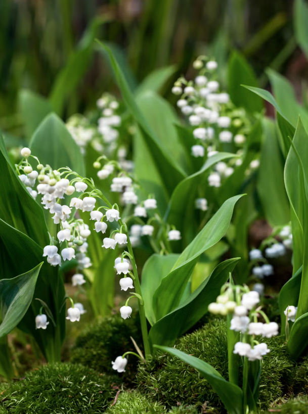
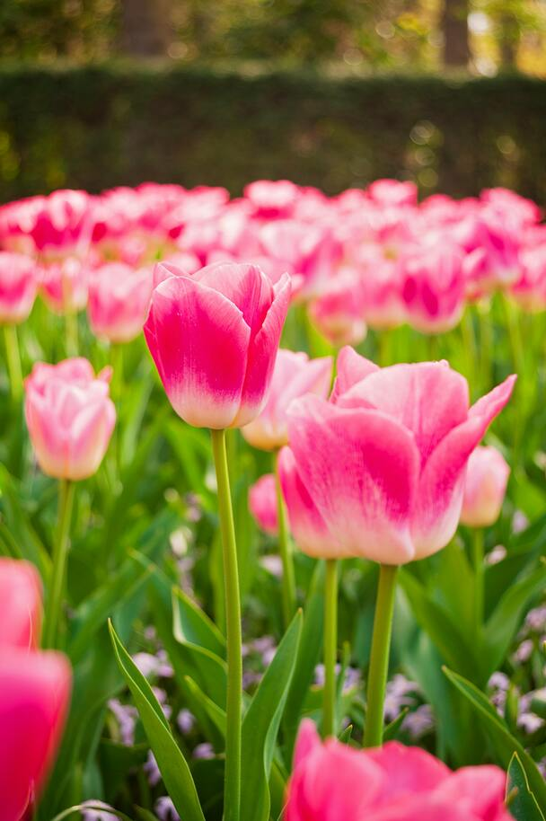
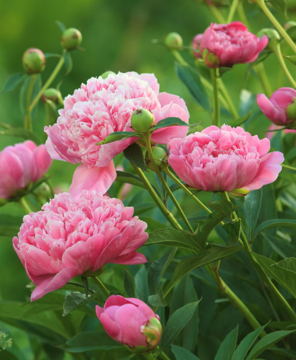

Lily of the Valley
These tiny bells ring with promise of happiness, purity and rebirth.
Trim stems at an angle and places in a clean vase with cool water and flower food. Remove submerged leaves and change water every two days.

Tulip
A vibrant herald of spring that symbolizes perfect love, cheerfulness, and the spirit of rebirth.
Provide fresh cold water daily. Trim stems at an angle, remove lower leaves, and keep away from heat sources.

Peonies
Lush and full, these blossoms embody love, romance, and prosperiy, often gifted to honor good fortune and happy marriages.
Immediately trim stems diagonally and place in deep, cool water. Keep away from sun and fruit, re-trimming and changing water every 1-2 days.